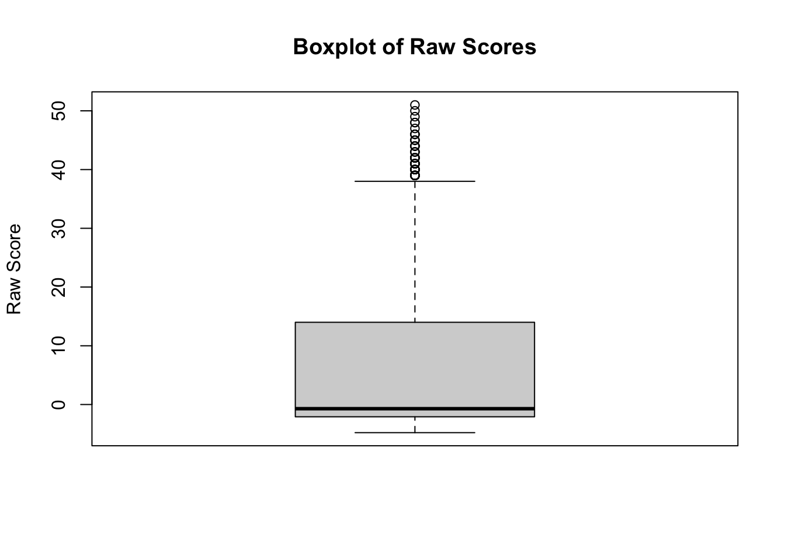

In this week, we spent some extra time investigating the original data source, and summarized on the data background. We further analyzed on the data in our dataset. We analyzed the distribution of two important variable in our dataset which is “Raw Score” and the “Decile Score”. The “Raw Score” is the original score of individual’s likelyhood to conduct recidivism. The higher the score reflects that the person has a greater chance to reoffend. The “Decile Score” is the score calculated based on the commercial algorithm COMPAS (Correctional Offender Management Profiling for Alternative Sanctions). COMPAS scores for each defendant ranged from 1 to 10, with ten being the highest risk. Scores 1 to 4 were labeled by COMPAS as “Low”; 5 to 7 were labeled “Medium”; and 8 to 10 were labeled “High.”
Data Background
This dataset is collected by ProPublica in 2013 and 2014, from the Broward County Sheriff’s Office in Florida. COMPAS is biased in favor of white defendants, and against black inmates. We are able to find the data from the original source.
There are no issues we can see with how the data was collected. The sample population is from criminal defendants in Broward County, Florida. Moreover, there exists some outliers, which will make the sample biased.
The data can be used to analyze the COMPAS recidivism algorithm. Also, the research “machine bias” is based on the same data. This data is used for some policy decisions. The COMPAS tool has been used by judges and parole officers to assess the likelihood of a defendant re-offending. Others asked whether the COMPAS algorithm exhibit racial bias in its predictions.
Data Analyze
library(tidyverse)
── Attaching core tidyverse packages ──────────────────────── tidyverse 2.0.0 ──
✔ dplyr 1.1.4 ✔ readr 2.1.5
✔ forcats 1.0.0 ✔ stringr 1.5.1
✔ ggplot2 3.5.0 ✔ tibble 3.2.1
✔ lubridate 1.9.3 ✔ tidyr 1.3.1
✔ purrr 1.0.2
── Conflicts ────────────────────────────────────────── tidyverse_conflicts() ──
✖ dplyr::filter() masks stats::filter()
✖ dplyr::lag() masks stats::lag()
ℹ Use the conflicted package (<http://conflicted.r-lib.org/>) to force all conflicts to become errors
Rows: 60843 Columns: 8
── Column specification ────────────────────────────────────────────────────────
Delimiter: ","
chr (3): Sex, Race, ScoreText
dbl (4): Person_ID, Age, RawScore, DecileScore
date (1): DateOfBirth
ℹ Use `spec()` to retrieve the full column specification for this data.
ℹ Specify the column types or set `show_col_types = FALSE` to quiet this message.
# Boxplot for RawScoreboxplot(compas_scores_clean$RawScore, main="Boxplot of Raw Scores", ylab="Raw Score", xlab="")

# Boxplot for DecileScoreboxplot(compas_scores_clean$DecileScore, main="Boxplot of Decile Scores", ylab="Decile Score", xlab="")
The box plot of the Raw Scores shows a wide range in values, suggesting a high level of variability among the scores. The median value is slightly above zero, and there is a notable presence of high outliers, indicating that some scores are significantly higher than the majority. The spread of scores within the interquartile range is large, pointing to a substantial dispersion among the middle 50% of data points. In contrast, there are no outliers on the lower side, which suggests that the lower scores are more closely packed together without extreme low values.
On the other hand, the box plot for the Decile Scores presents a more symmetrical distribution, with a median value around the midpoint of the score range. This plot is characterized by a narrower interquartile range, indicating less variation among the central half of the scores compared to the Raw Scores. The absence of significant outliers in the Decile Score distribution suggests a more uniform scoring scale, possibly indicating a methodical categorization into deciles. This could reflect a normalizing process, which aims to distribute the scores more evenly across a predetermined scale.